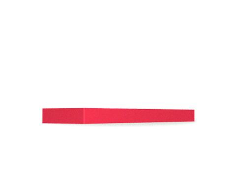

As a startup founder, I learned a lot about the UX design and experienced how not having any knowledge of UX design can ruin your entire entrepreneurial dream.
After operating for five years as an entrepreneur, I am excited to share my learning with the community of founders and entrepreneurs, especially for them who are just starting up as a tech entrepreneur.
In this article, I'll share, what is UX design? The goals of Ux design and the process of UX design.
UX design stands for user experience design. It defines the user's entire journey on your Mobile Application, Desktop, Web application or on any physical product.
In it, UX designer decides, how users will very first time interact with your application or physical-product, how he'll perform step by step tasks like signup, login, profile creation, order placement, payment, checkout or on and off.
The Goal of UX Design
As an entrepreneur and product owner, we want to provide maximum feasibility to our users with achieving the highest business goals. The UX design goals could be categories in two main categories.
User Goals
Users should be the main priority for the UX design, under the user's goal, we define how we can make it easy for the users to perform any desired task on our application with minimum efforts and investment.
For example, on a grocery app, user's goal could be ordering his grocery without any distraction with minimum efforts. For it, we can try the five click approach. So within the five clicks, the user should be able to place his order.
On a music app, a user's goal could be playing his favourite playlist with minimum efforts.
On a cab booking app, users goal could be booking the best cab for his destination for the cheapest rate.
To achieve such goals, UX designer designs an app in such a way, that it is effortless for the users to use it and without any distraction and minimum time user should be able to achieve his goals.
Business Goals
Business Goals are those goals which the App Owner, Businessman or an entrepreneur want to achieve from his product or service. Different businesses could have different types of Business goals.
For example, on a grocery app business goals could be steadily adding products to the users' cart and generating recurring monthly purchasing revenue from users.
For music app goal could be selling its premium subscription or serving advertise to the users to generate maximum revenue.
For a Cab booking app, the goal could be to have numbers recurring booking from a single user.
The Process of UX design
The user experience design process has mainly six steps in it to achieve the business and users goal.
Each of these steps could have substeps under it.
User Research
Photo by UX Indonesia on Unsplash
In user research, UX designer tries to empathise with the end-users. He put his foot in the user's shoes and check the different type of scenarios when the user will use the application, how he'll use the application, what is the ability of the user, what are users' motivation, what skills does he have and based on all that thought process UX designer start to perform his task.
Mainly in user research, three things take part.
User Persona design
A user persona is a characteristic representation of the actual user who is going to use actual product, service or application.
In user persona design, UX designer does the research about the user and try to find age, gender, occupation, education, qualifications, marital status, financial status, political affiliations and all other pieces of information related to the context of the application and current scope.
User story design
User story design is the process in which UX designer try to visualise the user environment of application, product or service usage.
Usually, the goal is to Imagine the worst situation possible and deliver the effortless solution in that situation.
For example: To design a grocery app, UX designer can imagine a situation like:
A lady who is working in the kitchen has her two to three months old toddler crying in his arms and have one hand available to use her smartphone.
So she must be able to order groceries withing five clicks from adding products to her cart to checkout.
The sole purpose of user story design is to generate maximum use case of application and how a user can use it effortlessly.
User Journey roadmap planning
The user journey roadmap defines how the user will start to use application and how he'll make his work done.
Let's consider the example of the grocery app the possible user journey map could be, log in to the app, search and browse products, add products to cart, pay bills and checkout.
Based on this journey map, the UX designer will design the application wireframes and screens.
Similarly, for every scenario, UX designer defines such user journey roadmap. The other scenarios could be like, forgot password, signup, order submission.
Wireframing
Photo by Sigmund on Unsplash
Wireframing is the process where UX designer tries to draw very first layout and interface of the real application, product or service.
The drawn screens are called wireframes, and it is the basic skeleton of any application's layout.
It purely depends on the wireframe, how the UI designer will design the app, how he'll set the flow in it.
Prototyping
Image source Chris Gannon Giphy account.
Prototypes are the interactive representation of the application.
It represents how it will look when it is ready, how the user will interact with it.
It explains the detailed touchpoints of the application or products.
It helps business owners to decide is it the same thing which they were expecting from the application to look like and perform the task they wanted it to do.
It helps front-end developers to build a real app exactly similar to it.
For example, we can look at following prototype sample.
Usability Testing
Image source Giphy @Dapulse
Once the prototype is ready, App owner can share it with the real users and can ask for their feedback to know, if using the application is easy, is it able to solve the users' problem.
Also, the goal could be to know if is there any step in the application user wants to skip or don't require.
If users like the interface details such as buttons, icons, colour themes.
Is it motivating them to use the application frequently?
Analytics
Photo by UX Indonesia on Unsplash
Once your initial application has been released, and users are using it for a while. Then you have enough data about the interaction and statistics of the application.
Driving the useful and actionable information from the data and taking actions on it, Is the sole purpose of analytics.
For example: If in a food delivery application, after adding dishes to the cart, users are not registering to it and it leads to abandoned order.
There could be a possible reason at checkout page maybe users are not finding the option to register or signup.
Summary
As an entrepreneur, you must know the basics of UX design. It will help you to design better applications, products and services.
The goal of UX is to build better applications for users and business to achieve their goals effortlessly.
UX design process is a step by step approach for designing a product, service or application at its best.
It helps you to visualise the application before building it. You can interact with it using wireframes and prototypes.
Not knowing the basics of UX design can ruin your entire startup and product.
A UX designer is a professional expert who could help you to design your product's user experience.
Thank you for reading, If this article gave you any useful information, please don't forget to like and share it. You can ask me any question in the comment section and can share your thoughts about it.